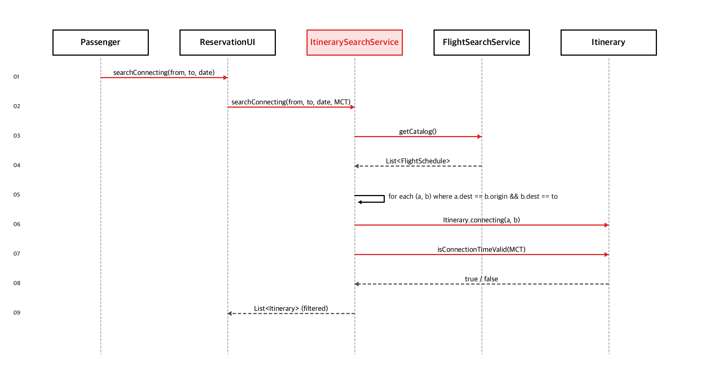

// MCT: 국내 60분 / 국제 90분 public boolean isConnectionTimeValid(Duration minimumConnectionTime) { if (segments.size() < 2 || minimumConnectionTime == null) return true; for (int i = 0; i < segments.size() - 1; i++) { Segment a = segments.get(i), b = segments.get(i + 1); if (a.getArrivalTime() == null || b.getDepartureTime() == null) return false; Duration layover = Duration.between(a.getArrivalTime(), b.getDepartureTime()); if (layover.compareTo(minimumConnectionTime) < 0) return false; } return true; }